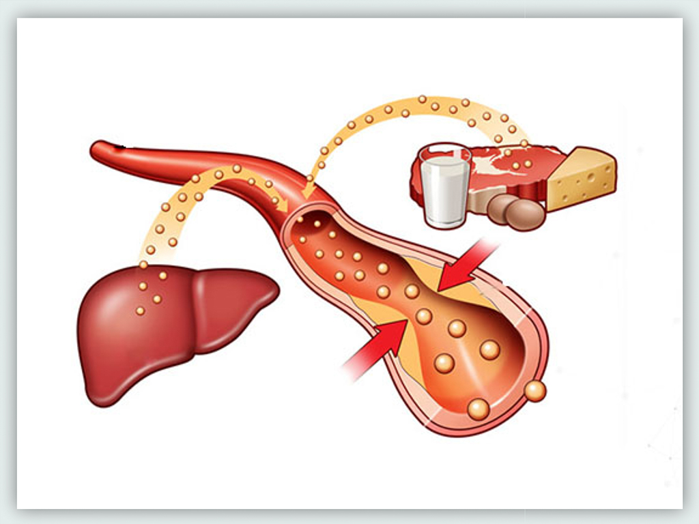

고지혈증
정의
고지혈증은
필요 이상으로 많은 지방성분 물질이 혈액 내에 존재
하면서 혈관벽에 쌓여 염증을 일으키고
그 결과 심혈관계질환을 일으키는 상태입니다.

원인
유전적인 요인으로 인해 혈액 내에 특정 지질이 증가하여 고지혈증이 발생하는 경우가 많지만,
비만이나 술, 당뇨병 등과 같은 다른 원인에 의해서도 고지혈증이 생길 수 있습니다.
증상
대부분 증상이 없지만 일부에서 합병증이 발생하면 그와 연관된 증상이 생길 수 있습니다.
혈액 내 중성지방이 크게 증가하면 췌장염이 발생할 수 있으며 췌장염의 증상은 복통으로 나타날 수 있습니다.
일부 환자의 경우 아킬레스건에 황색종이 생길 수 있으며 눈꺼풀에 황색판종이 나타나기도 합니다.